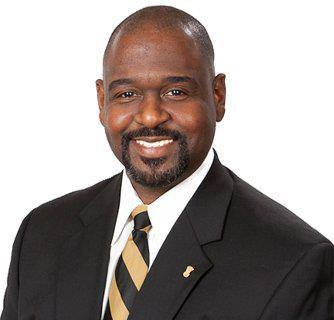

The Founding
The Beta Phi Chapter of Alpha Phi Alpha Fraternity, Incorporated is an entity steeped in the rich traditions of brotherhood, scholarship, leadership, and service. The Beta Phi Chapter was chartered on an ice-cold Friday, November 11, 1938, by eight courageous, intelligent, tenacious, and hardworking young men on the campus of Dillard University in New Orleans, Louisiana.
The Eight Charter Members — The 64th House of Alpha
- Robert Bonner
- Willard Dumas
- James L. Hall
- Major Tillman James Howard
- Marcus Neusadter, Jr.
- Mahloon Clifton Rhaney
- Dr. Mitchell W. Spellman
- Vernon L. Winslow
Since the very inception of the chapter, the members have strived to maintain high scholastic marks while at the same time serving the local community both at Dillard University and the New Orleans community at large.
Campus Leadership & Service
Beta Phi Brothers have served in several campus leadership positions over the decades — the SGA, NPHC, Class Councils, Dorm Councils, Pre Alumni Council, NAACP — and have served as Student Scholar Athletes, Melton Fellows, concert choir members, and in various honor societies and clubs. The chapter is also proud to have produced the first appointed Mister Dillard University, Montae Richardson, and the first elected Mister Dillard University, Kael Saloy.
The chapter has also produced officers of Alpha Phi Alpha on the national, regional, district, and local levels, and holds the honor of producing several assistant regional vice presidents including Brothers Marion Bracy, Marc Robertson, Kevin Speed, and Walter Tillman, Jr.
Convention Excellence
The Beta Phi Chapter has served as co-host to several General Conventions, Regional Conventions, District Conventions, and General President Inaugurations — including the inauguration of both past General President Ernest N. Morial and Dr. Charles C. Teamer, Sr.
In 1985, Beta Phi received the highest award in Alpha Phi Alpha by being named Chapter of the Year at the General Convention in Atlanta, Georgia. Brother William Washington was the Chapter President at that time.
Notable Brothers
The Beta Phi Chapter has produced men who have served Alpha in distinguished positions:

Era of Excellence (2011–Present)
In 2003, the chapter was recognized as the Louisiana District Chapter of the Year and the 2003 Southwestern Region Chapter of the Year under Chapter President, Brother Kyle Jones, with the most registered brothers at the 2003 General Convention in Detroit.
Since 2011, with the emergence of the line "Dawn of a New Age" on Dillard's campus, the Beta Phi Chapter has won:
- — Louisiana District Highest GPA (10x)
- — Louisiana Chapter of the Year (6x)
- — Louisiana College Brother of the Year (3x)
- — Louisiana College Brother Highest GPA (5x)
- — Louisiana Oratorical Contest Winner (2x)
- — Louisiana Scholar Bowl Winner (2x)
In 2021, under Chapter President Rodney Perkins, Beta Phi was awarded National Chapter with the Highest GPA. Brother Chad Fuselier won National Brother with the Highest GPA — and went on to become one of the Valedictorians for the Dillard University Class of 2022.
The Beta Phi Endowed Scholarship
In 2013, at the Beta Phi 75th Anniversary under Brothers Darnell Prejean, Marion Bracey, and Jimmie Varnado, Beta Phi became the first BGLO chapter at Dillard University to establish an endowed scholarship, donating over $25,000.
The chapter donated again to the scholarship at the 80th Anniversary under Bro. Theo Moody ($38,000+), and again at the 85th Anniversary in 2023 under Chair Malik Bartholomew and Endowment Chairs Kyle Jones, Marion Bracy, and Victor Robinson.
The Mother of Beta Phi
The Beta Phi Chapter's official mother is Mrs. Shirley B. Porter. Mrs. Porter served as former bookstore director of Dillard University and was an active supporter of all chapter activities for over three decades. A life member of the NAACP and tireless community servant, she always had time for her "Beta Phi Boys." She remains in every Beta Phi brother's heart — a beautiful yellow rose of inspiration, missed by all of her sons.
The Birth of BPAA
At the 85th Anniversary of the Beta Phi Chapter, during the brotherhood meeting, college and alumni brothers voted and confirmed to create the Beta Phi Alumni Association, Inc.
"Our Mission"
The mission of The Beta Phi Alumni Association, Inc. shall be to "encourage and promote the highest ideals of brotherhood, scholarship, and service, while providing support and advocacy to The Beta Phi Chapter, the brothers of this Association, and to our Alma Mater, Dillard University."
It is our wish and prayer that the future brothers of the Beta Phi Chapter continue the legacy of remaining a positive force on the Dillard University campus as they strive for excellence and heritage in brotherhood, service, scholarship, and leadership.